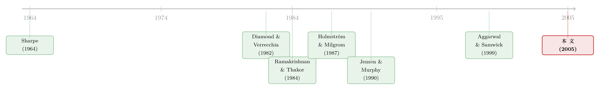

老板的奖金，定不了股票的「期望收益」，却定得了它的「价格」
本文读的是 Ou-Yang (2005, Review of Financial Studies)：作者把 CAPM 和道德风险塞进同一个连续时间一般均衡里，得到一个反直觉的结论——一只股票的期望美元收益与经理的激励、与公司的特质风险毫无关系，但均衡价格却被它们牢牢钉住；于是期望收益率确实受激励与特质风险影响，可这影响不是作为一个独立的风险因子发生的，而是经由它们对系统性风险的渗透。顺带，它还解开了一个老谜题：为什么现实里相对业绩评价用得那么少。
1 一个没有解开的谜
先讲一个困扰了薪酬研究者几十年的谜。
理论上，委托人给经理设计薪酬时，有一招几乎是「免费的午餐」：相对业绩评价 (relative performance evaluation, RPE)。它的逻辑朴素得近乎显然——如果一家公司的股价天然和大盘同涨同跌，那么当大盘涨了，经理的薪酬里就该把这块「随大流」的部分减掉；因为那不是经理的功劳，是市场的功劳。Holmström (1982) 把这件事讲得很清楚：用别人的业绩去过滤掉共同风险 (common risk)，能改善福利。Baiman and Demski (1980)、Diamond and Verrecchia (1982) 在各自的设定里也得到了类似结论。
按这个逻辑，CEO 的合约里应该普遍出现一个「市场组合系数为负」的项：大盘越好，扣得越多。
可现实偏偏不买账。Antle and Smith (1986)、Jensen and Murphy (1990)、Aggarwal and Samwick (1999a)、Bertrand and Mullainathan (2001) 一路找下去，几乎找不到 RPE 的影子；Aggarwal and Samwick (1999b) 甚至发现某些情形下 RPE 是正的。综述里，Abowd and Kaplan (1999) 和 Prendergast (1999) 干脆把「RPE 的缺席」列成了一个未解之谜。
接着，一个自然的问题是：是理论错了，还是测试错了？
作者把矛头指向了一个被长期忽视的裂缝。几乎所有这类理论，都有两个共同的「先天不足」：第一，委托人被假定为风险中性；第二，模型里根本没有多资产的均衡，于是最优合约只能写在公司的现金流或会计指标上。可现实中，CEO 的薪酬几乎总是挂在公司的市场价值上——市场价值是投资者对未来现金流的预期，而会计指标是已经实现的量，两者天差地别。更要命的是，没有一个均衡的资产定价模型，你甚至没法严格地区分什么是系统性风险、什么是特质风险——而正是这个区分，决定了经理激励该怎么定。
于是真正关键的一步出现了：把资产定价（CAPM 那一套）和道德风险（委托-代理那一套）焊到同一个一般均衡里，让委托人也厌恶风险、也能在市场上交易，然后问一句——以前那些写在现金流上的结论，换成市场价格之后，还成立吗？
这就是这篇论文要干的事。
2 把 CAPM 和道德风险装进同一个均衡
在拆模型之前，先把这篇文章的「中心思想」立起来，因为后面所有的推导都是为它服务的。
整篇文章其实只在反复讲透一件事：在均衡里，期望美元收益 (expected dollar return) 和期望收益率 (expected rate of return) 是两个截然不同的东西，而经理激励与特质风险，对这两者的作用方式完全相反。
- 对期望美元收益（一年后多拿几块钱）——它们没有任何影响。
- 对均衡价格（你今天得花几块钱买这只股票）——它们有影响。
- 因此对期望收益率（美元收益 ÷ 价格）——它们当然有影响，但这影响是经由价格这个渠道，而不是作为一个与系统性风险并列的、独立的风险因子。
把这三句话记住，下面的故事就是它的展开。
3 模型：现金流、合约与价格
这是一篇彻头彻尾的理论论文，所以我们老老实实把设定一步步铺开。沿用 Holmström and Milgrom (1987)，作者选了连续时间的框架，因为它在推导最优合约时格外干净。
经济体。 在有限期 \([0,T]\) 上，有 \(N\) 只风险资产和一只无风险资产（利率为常数 \(r\)）。第 \(i\) 家公司的现金流 \(D_{it}\) 服从
$$dD_{it} = (A_{it} + \rho_i D_{it})\,dt + \sigma_{ic}\,dB_{ct} + \sigma_{ii}\,dB_{it}.$$
这里 \(B_{ct}\) 是所有公司共享的那个布朗运动——它就是系统性风险的来源；\(B_{it}\) 是只属于第 \(i\) 家公司的布朗运动，对应特质风险。\(A_{it}\) 是经理的努力，它只进入漂移项（drift），不影响扩散——这是跟 Holmström-Milgrom (1987) 一脉相承的简化。\(\rho_i\) 是公司「天生的」增长率：哪怕努力一样，高科技行业的公司也可能比成熟行业长得更快。
把这个核心方程拆给你看：
这个现金流过程有个不太讨喜的特征：它是正态而非对数正态的，于是现金流（乃至均衡股价）可能取负值。作者承认这一点，但论证只要把均值调大、方差调小，负值的概率就可以压得很低。第 4 节里他会进一步讨论换成对数正态会怎样。
经理的问题。 经理管理公司要付出成本，成本函数是凸的二次型 \(c(t,A_{it}) = \tfrac12 k_i(t)A_{it}^2\)，其中 \(k_i(t)\) 可以理解为「经理能力的反面」——越能干，\(k_i(t)\) 越小。经理在 \(T\) 时刻从投资者手里拿到薪酬 \(S_T^i\)，且不能自己买卖证券，唯一收入就是这份合约。他有负指数效用、风险厌恶系数 \(R_a\)，于是要解
$$\sup_{\{A_{it}\}}\; E_0\!\left[-\frac{1}{R_a}\exp\!\left(-R_a\Big[S_T^i - \int_0^T c_i(t,A_{it})\,dt\Big]\right)\right].$$
投资者的问题。 有 \(N\) 个完全相同的投资者，市场出清要求每人持有每家公司 \(1/N\) 的份额（\(\theta_{ij}=1/N\)）。投资者也有负指数效用、风险厌恶系数 \(R_p\)。他既要决定买多少股票和债券，又要给经理设计激励合约，去最大化终端财富的期望效用
$$\sup_{\{\theta_t, A_t\},\,S_T}\; E_0\!\left[-\frac{1}{R_p}\exp\!\left(-R_p\Big[W_T - \sum_{i=1}^N S_T^i(\{\theta_t\})\Big]\right)\right],$$
约束是经理的参与约束（PC）、激励相容约束（IC）和投资者自己的预算约束。
价格。 沿用「指数效用 + 正态现金流」的传统，作者假设均衡定价函数是线性的：
$$P_{it} = \lambda_{i0}(t) + \sum_{j=1}^N \lambda_{ij}(t)\,D_{jt},$$
其中系数 \(\lambda(t)\) 由市场出清条件去验证，边界条件是 \(\lambda_{i0}(T)=0,\ \lambda_{ii}(T)=1,\ \lambda_{ij}(T)=0\ (i\ne j)\)——到期那一刻，股价就等于现金流本身。
关键的直觉：努力为什么只对特质风险负责。 把这些零件拼起来，会得到一个非常漂亮的分离。在指数-正态的世界里，经理的确定性等价 = 期望薪酬 − \(\tfrac{R_a}{2}\)×薪酬方差。努力 \(A\) 线性地进入期望、而成本是二次的，于是最优努力满足一个简单的一阶条件：边际激励 = 边际成本。
接着是这篇文章最干净的一招：系统性风险是可以被大量资产推断出来的（large economy 里资产数趋于无穷），所以风险中性的投资者会用 RPE 把它从经理薪酬里完全过滤掉；而风险厌恶的投资者做不到完全甩锅，他得和经理最优地分担系统性风险——分担的方式，恰恰就像没有道德风险时一样。结果就是：经理薪酬里的「激励部分」只剩下特质风险，系统性风险和特质风险在合约里被彻底分开了。
于是薪酬-业绩敏感度 (pay-performance sensitivity, PPS)——定义为经理持有本公司的份额——只取决于现金流的特质风险 \(\sigma_{ii}\)，而不是总风险。这一点至关重要，因为几乎所有「激励与风险负相关」的实证检验，用的都是总风险（关于这一点的另一种处理，可参见《股票还是期权？把「破产」写进高管的工资条》）。作者点名了 Jin (2002) 和 Garvey and Milbourn (2003) 这两个用了 CAPM beta 的例外——他说，他们的算法只有在用美元收益时才被本文证明是对的。
4 核心反转：美元收益与收益率
现在可以收网了，讲那个反直觉的结论。
当委托人和代理人都用指数效用、现金流是正态时，作者用闭式解得到了一个「修正版 CAPM」：
一只股票的期望超额美元收益，减去付给经理的期望薪酬，与市场组合的期望超额美元收益呈线性关系；其中 \(\beta\) 仍然是「该股票美元收益与市场美元收益的协方差，除以市场美元收益的方差」，只不过股票收益和市场收益都要为经理薪酬做调整。
换句话说，把薪酬这块「漏出去」的现金流校正掉之后，CAPM 的线性关系原封不动地活了下来。这本身已经够漂亮了。但真正的炸点在下一句：
一只股票的期望美元收益，与它经理的 PPS、与公司的特质风险，完全无关。
直觉是这样的：投资者可以跨公司分散，特质风险在大经济体里被分散得干干净净；而经理薪酬里那块「激励」只跟特质风险挂钩，所以它对美元收益的贡献，在加总到市场层面后被洗掉了。于是哪怕存在道德风险，从美元收益的角度看，特质风险的含义和原版 CAPM 一模一样。
那么，激励和特质风险到底跑到哪里去了？
它们跑进了价格里。PPS 越高，经理越卖力，现金流的漂移越大，均衡股价越高；特质风险越大，在控制其他变量后，均衡股价越低。如果把一只股票的风险溢价定义为「期望超额美元收益 ÷ 当前股价」，那么：PPS 越高 → 分母越大 → 风险溢价越低；特质风险越高 → 分母越小 → 风险溢价越高。
于是期望收益率（= 美元收益 ÷ 价格）确实被激励和特质风险影响了——但你看清楚了：这影响全部经由价格这个分母，而不是因为特质风险变成了一个新的、独立的风险因子。
作者用两个极端情形把这把刀磨得更锋利：
- 假想系统性风险消失、只剩特质风险时：股票的期望超额美元收益为零，期望收益率塌回到无风险利率。这说明特质风险不是独立的定价因子——道德风险即便在没有系统性风险时依然存在，可它撑不起任何风险溢价。
- 投资者风险中性、但经理风险厌恶时：道德风险照样存在，可所有风险资产的期望收益率还是塌回无风险利率——因为风险中性的投资者根本不在乎系统性风险。
这两个例子，正是对前人的「定点打击」。Diamond and Verrecchia (1982) 和 Holmström (1982) 用的是风险中性委托人，却暗示特质风险会影响期望收益；本文说，在一般均衡里，那是局部均衡的幻觉。事实上作者明确对比：在局部均衡模型里，期望美元收益会随特质风险上升，而在本文的一般均衡里它与特质风险无关——一正一反，结论是相反的。
这就是为什么作者敢说：局部均衡模型可能给出错误的结论。
5 RPE 之谜：风险厌恶的委托人为什么少用相对业绩
绕了一圈，回到开头那个谜。为什么现实里 RPE 用得那么少？
本文的答案藏在「委托人也厌恶风险」这一改动里。
一方面，因为系统性风险可被投资者推断，投资者想用 RPE（合约里市场组合前面放一个负系数）去降低风险厌恶经理对这块风险的暴露。另一方面，风险厌恶的投资者不能像风险中性投资者那样独吞全部系统性风险——他必须和经理分担，这就在合约里塞进了一个正系数。两股力量相抵，RPE 的绝对幅度被压小了，比前人那种风险中性委托人模型里的值要小。
更精确地，作者给出 RPE 由三样东西决定：投资者的风险厌恶 \(R_p\)、经理的风险厌恶 \(R_a\)，以及公司市场价值的标准差与市场组合标准差之比。如果这个比值足够小，或者经理没那么怕风险，RPE 甚至可以是正的。于是 RPE 一般而言可正可负——那么一旦你拿横截面回归去测它，市场组合前面那个系数很可能就不显著。
这正好对上了那个「未解之谜」：RPE 的缺席，可能根本不是因为它不存在，而是因为它在不同公司间有正有负、相互抵消，在回归里被洗成了一个不显著的零。
作为副产品，作者还证明：在一定条件下，最优合约是股价水平与市场组合水平的线性组合——这就为大量「把薪酬写在市场价格上」的实证研究正了名。这一点和把激励、市场反馈写进公司决策的那条线索遥相呼应（参见《老板为什么偏爱「说不清」的项目？——一笔债，如何替股东堵死这条暗路》）。
6 文献脉络
把这条线索摊开看，会发现本文站在两条大河的交汇处。
一条是资产定价。源头是 CAPM——Sharpe (1964)、Lintner (1965)、Mossin (1966)——它的结论是期望超额收益线性依赖于市场，\(\beta\) 是协方差比方差，公司特征、特质风险一律不进定价。这条河里，现金流/股利往往被外生地设成正态或对数正态。
另一条是道德风险下的委托-代理与估值。Holmström (1982) 立起了 RPE 的理论；Diamond and Verrecchia (1982) 在一个风险中性投资者的均衡里推出最优经理合约，证明系统性风险会被完全剔除；Ramakrishnan and Thakor (1984) 把它推广到风险厌恶投资者，发现一旦引入道德风险，合约会同时依赖系统性和特质风险——但他们是在「假设套利定价理论成立」的局部均衡里做的。再往后，Holmström and Milgrom (1987) 给出了连续时间里线性合约最优的经典结果，成了本文方法论的基石。

与此同时，实证那条支流越淌越浑：Jensen and Murphy (1990)、Gibbons and Murphy (1990)、Aggarwal and Samwick (1999a, 1999b)、Bertrand and Mullainathan (2001)、Jin (2002)、Garvey and Milbourn (2003) 围着 RPE 吵成一团，证据始终「mixed」。
本文的位置，就是把这两条大河第一次在一个大经济体的一般均衡里合流：既给出 CAPM 式的线性关系，又内生地刻画出含 RPE 的最优合约，并且澄清——之所以局部均衡会得出特质风险定价的结论，是因为它缺了「均衡」和「多资产」这两块拼图。
7 评论与延伸（Q&A + 研究方向）
(a) 几个可能的疑问
Q：「期望美元收益与特质风险无关，但期望收益率有关」——这不是自相矛盾吗？
不矛盾，关键在分母。美元收益是「一年后多拿几块钱」，收益率是「美元收益 ÷ 今天的价格」。特质风险不动美元收益（分子），但它压低均衡价格（分母），于是收益率被抬高了。所以特质风险是经由价格影响收益率的，它本身不是一个与系统性风险并列的独立因子。
Q：那为什么 PPS 只跟特质风险挂钩，而不是总风险？
因为在均衡里，系统性风险被投资者和经理最优分担，就像没有道德风险时一样，这部分从「激励」里被干净地剥离了；剩下需要靠激励去对付的，只有分散不掉、过滤不掉的特质风险。这恰恰提醒实证研究者：用总风险去测「激励-风险」关系，可能从一开始就用错了尺子。
Q：RPE 既然「免费有效」，模型凭什么让它变小甚至变正？
因为委托人不再风险中性。风险中性的投资者乐意独吞系统性风险，于是把它从经理薪酬里全过滤掉（强负的 RPE）；风险厌恶的投资者吞不下，得拉经理一起分担，这就往合约里加了一个正项。两者相抵，RPE 缩小，且当「公司市值波动 / 市场波动」之比足够小时可以翻正。
Q：线性定价函数是「假设」出来的，会不会循环论证？
这是「指数效用 + 正态」传统里的标准做法——先猜线性形式，再用市场出清条件去验证系数自洽。它换来了闭式解，代价是现金流和价格可能取负、且分布被锁死在正态。第 4 节作者自己也提醒：一旦换成对数正态，引入薪酬后均衡股价就不再是对数正态了，波动率会同时依赖经理的现金薪酬和股价水平本身。
Q：「大经济体（资产数趋于无穷）」这个假设是为了好看，还是有实质作用？
有实质作用，而且是论证的命门。只有在大经济体里，系统性风险才能被「推断出来」、特质风险才能被分散干净，作者才能把特质风险对期望收益的潜在影响归因于代理问题，而不是「投资者没分散好」。在投资者无法完全分散的模型里，特质风险即使没有代理问题也会进定价——那是另一回事。
Q：这篇纯理论的文章，对实证到底有什么可操作的指引？
三条很硬：第一，测「激励-风险」关系要用特质风险而非总风险；第二，测 CAPM/beta 时若涉及薪酬，应该在美元收益而非收益率层面去算 beta；第三，RPE 在横截面上可正可负、会相互抵消，所以一个不显著的市场系数不等于 RPE 不存在。
(b) 几个可能的研究问题与提案
1. 把这套「美元收益 vs 收益率」的区分搬到公司债市场。
【经济故事】本文的逻辑——激励/特质风险不动美元收益、只动价格——在股票上讲得通；那债券呢？信用利差里有一块被反复争论的「特质成分」。若债券价格同样被发行人的治理/激励经由现金流漂移渗透，那么用利差（≈收益率）测出的「特质风险定价」可能也部分是价格分母效应。 【可行性】中。需要 TRACE 的债券价格 + Compustat/ExecuComp 的高管激励变量 + 公司层面的特质波动估计。识别难在「努力」不可观测，可用 PPS、期权 delta 作代理，做横截面与面板回归，并区分美元口径与收益率口径。doable，但因果识别偏弱，更像是「事实刻画 + 口径对比」。
2. 委托人风险厌恶 → RPE 缩小：能不能找一个外生改变委托人风险承受力的冲击来检验？
【经济故事】本文的核心比较静态是「委托人越厌恶风险，RPE 越小」。如果能找到一个外生地改变主要股东（机构投资者）风险承受能力的事件，就能检验 RPE 强度是否随之变化。 【可行性】中。可用机构投资者的资本约束冲击（如某类基金的赎回压力、监管资本变化）作为委托人风险厌恶上升的代理，看其重仓公司 CEO 合约里市场系数的变化。需要薪酬合约细节（ISS/合约文本）。识别可借差分，难点是合约调整缓慢、内生性强，doable 但要谨慎。
3. 外资持有人作为「风险厌恶程度不同的委托人」。
【经济故事】本文把 RPE 拴在委托人风险厌恶上。不同类型的股东（本地 vs 外资、长期 vs 短期）对系统性风险的承受能力天然不同，那么外资持股比例的变化，是否系统地改变了 CEO 薪酬中的市场敏感度？这把高管薪酬和外资持有人这两条线索接了起来。 【可行性】中偏低。需要跨国/跨公司的外资持股（如 FactSet/Orbis）+ 薪酬合约。理论预测方向清晰，但「外资风险厌恶更高还是更低」本身就要先论证，且薪酬合约的跨国可比性差。更适合做成单一制度变更（如某国放开外资持股上限）的事件研究。
4. 把「努力影响漂移、不影响扩散」这个简化放开。
【经济故事】本文为可解性假设努力只动漂移。但现实中经理的行为（如风险转移）恰恰会动波动率。一旦努力影响扩散，特质风险与激励的「分离」可能不再干净，RPE 结论会不会反转？ 【可行性】低（理论）。这是把模型往 Cadenillas-Cvitanić-Zapatero (2004)、Guo and Ou-Yang (2003) 那条「行动影响波动率」的线上推。纯理论扩展，求闭式解很难，但在「均衡 + 波动率可控」方向上是真正未被填满的空白。
参考文献
- Aggarwal, R., and A. Samwick (1999a). The Other Side of the Trade-Off: The Impact of Risk on Executive Compensation. Journal of Political Economy 107, 65–105.
- Aggarwal, R., and A. Samwick (1999b). Executive Compensation, Strategic Competition, and Relative Performance Evaluation: Theory and Evidence. Journal of Finance 54, 1999–2043.
- Antle, R., and A. Smith (1986). An Empirical Investigation of the Relative Performance Evaluation of Corporate Executives. Journal of Accounting Research 24, 1–39.
- Bertrand, M., and S. Mullainathan (2001). Are CEOs Rewarded for Luck? A Test of Performance Filtering. Quarterly Journal of Economics 116, 901–932.
- Diamond, D. W., and R. E. Verrecchia (1982). Optimal Managerial Contracts and Equilibrium Security Prices. Journal of Finance 37, 275–287.
- Garvey, G., and T. Milbourn (2003). Incentive Compensation when Executives Can Hedge the Market: Evidence of Relative Performance Evaluation in the Cross Section. Journal of Finance 58, 1557–1581.
- Gibbons, R., and K. Murphy (1990). Relative Performance Evaluation for Chief Executive Officers. Industrial and Labor Relations Review 43, 30s–52s.
- Holmström, B. (1982). Moral Hazard in Teams. Bell Journal of Economics 13, 324–340.
- Holmström, B., and P. Milgrom (1987). Aggregation and Linearity in the Provision of Intertemporal Incentives. Econometrica 55, 303–328.
- Jensen, M., and K. Murphy (1990). Performance Pay and Top-Management Incentives. Journal of Political Economy 98, 225–264.
- Jin, L. (2002). CEO Compensation, Diversification and Incentives. Journal of Financial Economics 66, 29–63.
- Lintner, J. (1965). The Valuation of Risky Assets and the Selection of Risky Investments in Stock Portfolios and Capital Budgets. Review of Economics and Statistics 47, 13–37.
- Mossin, J. (1966). Equilibrium in a Capital Asset Market. Econometrica 35, 768–783.
- Ou-Yang, H. (2005). An Equilibrium Model of Asset Pricing and Moral Hazard. Review of Financial Studies 18(4), 1253–1303.
- Ramakrishnan, R. T. S., and A. V. Thakor (1984). The Valuation of Assets under Moral Hazard. Journal of Finance 34, 229–238.
- Sharpe, W. F. (1964). Capital Asset Prices: A Theory of Market Equilibrium under Conditions of Risk. Journal of Finance 19, 425–442.